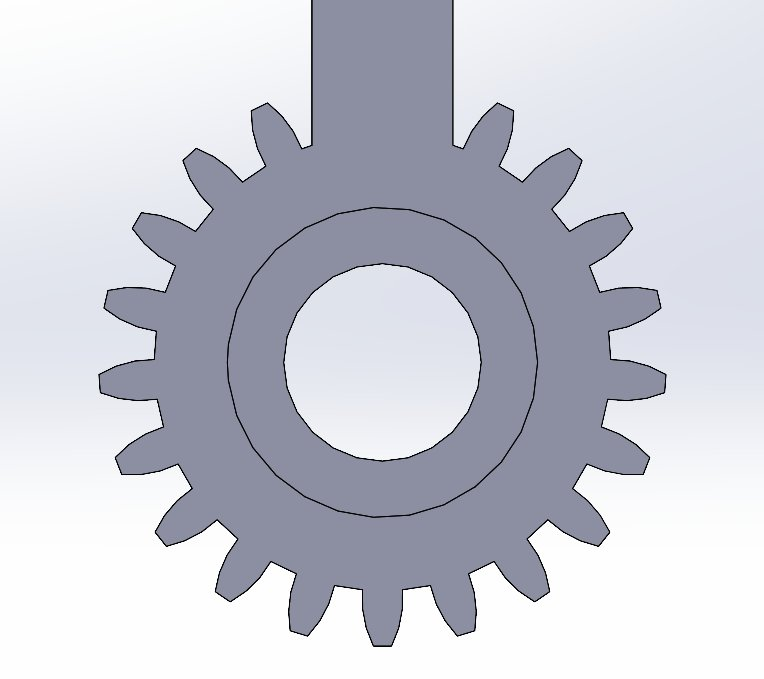

Leading end-to-end mechanical design of a servo-actuated gripper for manipulation of 500 mL laboratory beakers in wet lab environments — engineered for reliable, repeatable actuation on wet glass surfaces.
Laboratory robotic manipulators operating in wet lab environments face a deceptively difficult challenge: glass beakers become significantly harder to grip when wet. Standard gripper designs rely on normal force alone, but on a wet glass surface the friction coefficient drops substantially — requiring either dangerously high grip forces or a fundamentally different contact strategy.
The gripper also needs to handle 500 mL beakers reliably and repeatedly without recalibration — in a lab context, inconsistent actuation wastes time and risks dropping samples.
The claw arms must open and close symmetrically — if one arm moves faster than the other, the gripper skews and loses its grip geometry. I designed a 3-gear transmission system where a central driver gear meshes with two identical driven gears mounted on each claw arm, ensuring perfectly synchronized motion.
The transmission also provides torque amplification from the servo motor — the smaller driver gear turns the larger claw gears, multiplying the output torque at the contact surface. This means the servo doesn't need to work as hard to achieve a secure grip, reducing current draw and heat.

Spur gear for the claw transmission — Module 2, 22 teeth, 12mm face width, 608ZZ bearing bore
Gear specs: Module 2 spur gears, 22 teeth on claw gears, 20° pressure angle, 12mm face width. Module 2 was selected for sufficient tooth strength at the 20 kg·cm servo load on 3D printed plastic — anything below Module 1.5 risks tooth stripping under shock loading.
I evaluated the slip risk on wet glass surfaces by analyzing the friction coefficient of common 3D printed materials against wet borosilicate glass. The results confirmed that PLA and PETG contact surfaces would slip under the required grip force — requiring a material intervention.
Silicone contact pads were integrated into the claw face design. Silicone maintains a high friction coefficient even on wet glass surfaces (μ ≈ 0.6–0.8 vs ~0.2 for PLA on wet glass), reducing the required normal force to achieve a secure grip and protecting the beaker surface from hard contact stress.
The claw curvature was also designed to conform to the cylindrical geometry of 500 mL beakers — distributing the contact force across a larger surface area and reducing stress concentration at the contact points.
3D printed assemblies accumulate dimensional error across every component — shaft holes, gear bores, housing walls. If these tolerances stack unfavorably, gears bind or mesh too loosely. I performed tolerance stack-up analysis in SolidWorks to ensure the worst-case dimensional variation still produced acceptable gear mesh quality.
Center-to-center distance between meshing gears is the most sensitive parameter — it must equal (T_driver + T_driven) / 2 × module exactly for correct mesh. The housing geometry was designed with this constraint as the primary driver, with all other features referenced from the shaft hole positions.